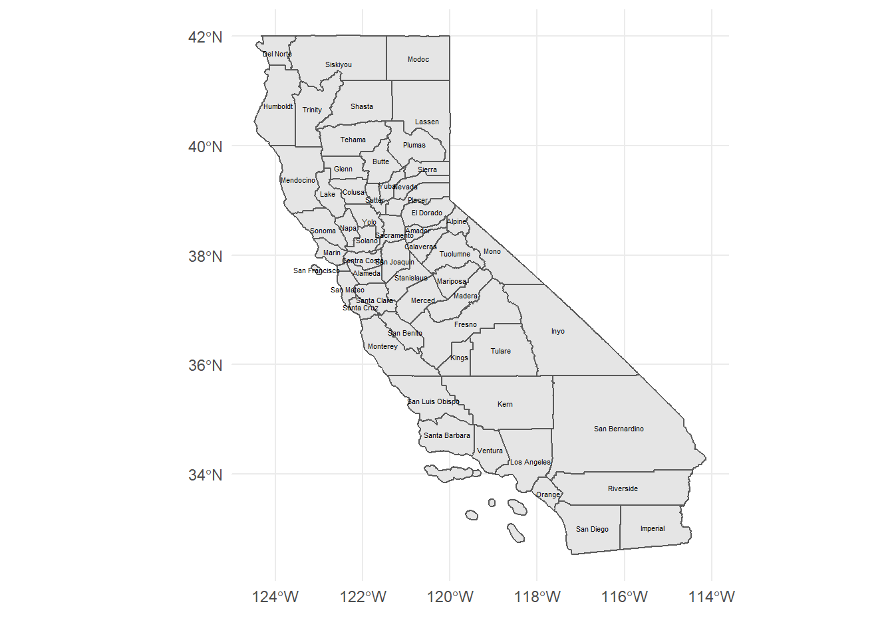

── Attaching packages ─────────────────────────────────────── tidyverse 1.3.2 ──
✔ ggplot2 3.3.6 ✔ purrr 0.3.4
✔ tibble 3.1.8 ✔ dplyr 1.0.9
✔ tidyr 1.2.0 ✔ stringr 1.4.1
✔ readr 2.1.2 ✔ forcats 0.5.2
── Conflicts ────────────────────────────────────────── tidyverse_conflicts() ──
✖ dplyr::filter() masks stats::filter()
✖ dplyr::lag() masks stats::lag()20 Research sites
Today is just going to be research oriented
20.1 California Water links
Los Angeles Department of Water and Power
California average precipitation by county
Public Policy Institute Water Use in CA
California Water Plan Update 2023 Check out the assumptions and estimates draft report
California Natural Resources Agency Open Data
20.1.1 Precipitation data - California by County
Grab data from NOAA NCEI climate data and check out the drought intensity with a visualization of precipitation anomaly.
county_precip <- read_csv('https://www.ncei.noaa.gov/cag/county/mapping/4-pcp-202102-12.csv', skip =3) %>%
janitor::clean_names() %>%
mutate(county = str_remove(location, ' County'))
precip_points <- ggplot(data = county_precip, aes(x = x1901_2000_mean, y = anomaly_1901_2000_base_period)) +
#geom_point() +
#geom_smooth(se = FALSE) +
geom_text(aes(label = county), size = 2, check_overlap = TRUE) +
theme_bw() +
labs(x = '1901-2000 precipitation average (inches)',
y = '2019 precipitation anomaly (inches)')#precip_points
ggplotly(precip_points)We can add that to a map, if we had a shapefile of California counties. The California open data portal has that info.
Doing this one time, point and click is ok. Here are the steps.
- Download the zipped shapefile (not code)
- Move it to your working directory (not code)
- Unzip/extract the zip file (code or not code - your choice)
- Read in shapefile using
read_sf()- (code) - Transform to WGS84 coordinate reference system (code)
- Make a map (code)
CA_county_dir <- 'CA_counties'
zipfile = 'ca-county-boundaries.zip'
## Note, I tried extracting to CA_counties first, but it added a second 'CA_counties/CA_counties' subdirectory, so this code just extracts to the working directory
unzip(zipfile, exdir = getwd())
#load sf
library(sf)Linking to GEOS 3.9.1, GDAL 3.4.3, PROJ 7.2.1; sf_use_s2() is TRUE#read the data
CA_county <- read_sf(dsn = CA_county_dir) %>%
st_transform("+proj=longlat +ellps=WGS84 +datum=WGS84")Figure 20.1 shows a map of California using ggplot and geom_sf
ggplot(CA_county) +
geom_sf() +
theme_minimal() +
geom_sf_text(aes(label = NAME), size = 1.5) +
labs(x = '', y = '')
20.1.2 Time for a quick data science lesson
Dataset CA_county has the geospatial information. Dataset county_precip has the precipitation data but doesn’t have the geospatial information included.
Putting the two datasets together is required to make the map to show spatial patterns in precipitation. Both datasets have a field that indicates the County Name. The tidyverse dplyr package has functions to join datasets by common variables.
-
inner_join()- keep only records present in both datasets. -
left_join()- keep all records from the first dataset and only matching variables from the second. Fill missing with NA -
right_join()- keep all records from the second dataset and only matching variables from the first. Fill missing with NA -
full_join()- keep all records both datasets - fill NA in any records where dataset is missing from one of the datasets. -
anti_join()- keep only records in the first dataset that don’t occur in the second dataset.

For the county case, California has 58 counties, but I will try an inner join to make sure that every county name matches.
GeoSpatial_precip <- inner_join(CA_county, county_precip,
by = c('NAMELSAD' = 'location'))
head(GeoSpatial_precip)?fig-MapPrecip shows the 1901-2000 precipitation average by county and the 2019 precipitation anomaly by county.
GeoSpatial_precip %>%
select(x1901_2000_mean, anomaly_1901_2000_base_period,
county) %>%
rename(meanPrecipitation = x1901_2000_mean, precipitationAnomaly.2019 = anomaly_1901_2000_base_period ) %>%
pivot_longer(cols = c(1,2), names_to = 'type', values_to = 'precip_in_inches') %>%
ggplot(aes(fill = precip_in_inches)) +
geom_sf(color = 'grey60') +
facet_wrap(~type) +
# scale_fill_distiller(palette = 'BrBG', type = 'div', direction = 1, name = 'Precipitation (inches)', mid = 0) +
scale_fill_gradient2() +
theme_minimal()How much water didn’t fall from the sky in 2019? I can estimate volumes if I have a county area. st_area() calculates the area and mutate() allows us to do some county level math to calculate volumes. Area X precipitation height = Volume. Google tells me that 1 inch is 0.0254 meters, to keep units consistent.
calc_volume1 <- GeoSpatial_precip %>%
select(county, anomaly_1901_2000_base_period) #%>%
calc_volume1$Area <- st_area(calc_volume1)
calc_volume2 <- calc_volume1 %>%
mutate(volume_m3 = as.numeric(anomaly_1901_2000_base_period * 0.0254 * Area))
deficity <- calc_volume2 %>%
ggplot(aes(fill = volume_m3)) +
geom_sf(color = 'grey60') +
scale_fill_gradient2(name = '2019 Water deficit (m3)',
labels = scales::comma_format()) +
geom_sf_text(aes(label = county), size = 1) +
theme_minimal() +
labs(x = '', y= '')
deficity20.2 Air Toxics Sacrifice Zones Resources
Ethylene oxide sterilization facilities
SCAQMD Ethylene oxide investigation, including a letter from last month designating the Ontario facility a ‘high risk’ facility. And there’s a facility not yet reported on within 1 mile of my house.
20.2.1 Toxics Release Inventory
Steps:
- Download the data from TRI - not code
- Move it to your working directory (not code)
- Read in
.csvusingread_csv()- (code) -
filter()for pollutants and sites of interest - Display on map
20.2.1.1 Import data from working directory
TRI_2021 <- read_csv('2021_us.csv') %>%
janitor::clean_names() %>%
filter(x34_chemical == 'Ethylene oxide') %>%
select(x4_facility_name, x6_city, x12_latitude, x13_longitude, x48_5_1_fugitive_air, x49_5_2_stack_air, x62_on_site_release_total) %>%
rename(facility = x4_facility_name,
city = x6_city,
lat = x12_latitude,
lng = x13_longitude,
emissions = x62_on_site_release_total)Warning: One or more parsing issues, see `problems()` for detailsRows: 76568 Columns: 119
── Column specification ────────────────────────────────────────────────────────
Delimiter: ","
chr (27): 2. TRIFD, 4. FACILITY NAME, 5. STREET ADDRESS, 6. CITY, 7. COUNTY,...
dbl (86): 1. YEAR, 3. FRS ID, 10. BIA, 12. LATITUDE, 13. LONGITUDE, 19. INDU...
lgl (6): 21. PRIMARY SIC, 22. SIC 2, 23. SIC 3, 24. SIC 4, 25. SIC 5, 26. S...
ℹ Use `spec()` to retrieve the full column specification for this data.
ℹ Specify the column types or set `show_col_types = FALSE` to quiet this message.head(TRI_2021)# A tibble: 6 × 7
facility city lat lng x48_5…¹ x49_5…² emiss…³
<chr> <chr> <dbl> <dbl> <dbl> <dbl> <dbl>
1 EVONIK CORP RESE… 30 -91 238 1747 1985
2 EQUISTAR CHEMICALS BAYPORT CHEMICAL… PASA… 30 -95 2321 8302 10623
3 MIDWEST STERILIZATION CORP JACK… 37 -90 211 196 407
4 UNION CARBIDE CORP SEADRIFT PLANT SEAD… 29 -97 1145 3467 4612
5 BECTON DICKINSON & CO MADISON OPERA… MADI… 34 -83 959 90 1049
6 TM DEER PARK SERVICES LP DEER… 30 -95 0 1 10160
# … with abbreviated variable names ¹x48_5_1_fugitive_air, ²x49_5_2_stack_air,
# ³emissionslibrary(leaflet)
library(htmltools)
leaflet() %>%
addTiles() %>%
addProviderTiles(provider = providers$Esri.WorldImagery,
group = 'Imagery') %>%
addLayersControl(baseGroups = c('Basemap', 'Imagery'), overlayGroups = 'TRI EtO Facilities',
options = layersControlOptions(collapsed = FALSE)) %>%
addCircles(data = TRI_2021, weight = 1, stroke = FALSE,
color = 'red',
radius = ~emissions * 10, popup = ~facility,
opacity = 0.5,
group = 'TRI EtO Facilities') %>%
addCircles(data = TRI_2021, color = 'red', opacity = 0.3)Assuming "lng" and "lat" are longitude and latitude, respectively
Assuming "lng" and "lat" are longitude and latitude, respectivelyExamine this map and tell me at least three things that are wrong with it.